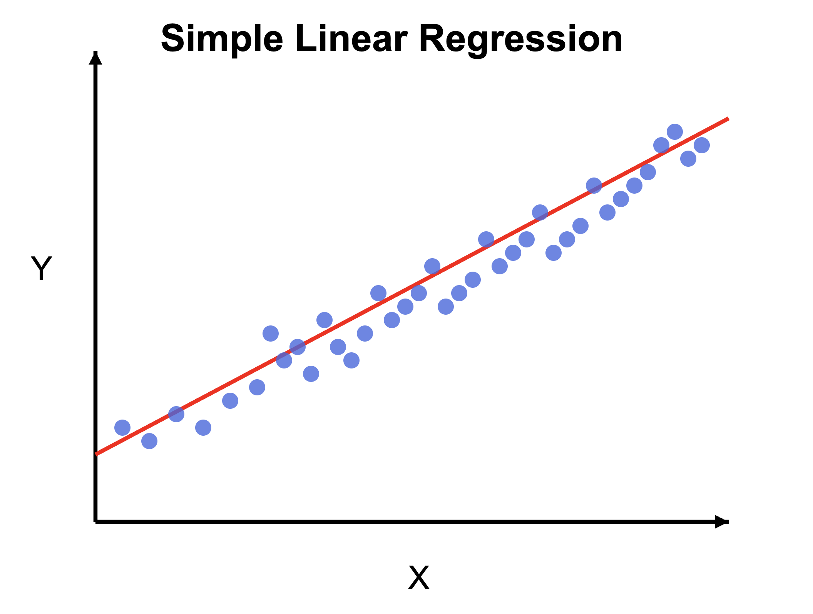

That's it ...
Remember when you were supposed to find the slope (m) and y intercept (b) based on some x, y coordinates in middle school? This is no different. In middle school, we used 2 points: x, y to find the m and b. Expect, interpolating between x, y means that we can find the exact line we want. In machine learning (and statistics), we might have multiple points so we can't find exactly where to place our line. Instead, we make the best estimate of where we think the line should be. Oh yeah, in ML we use cool kid symbols to show we know what we are doing: $$ \begin{aligned} m &= \theta_1 \\ b &= \theta_0 \end{aligned} \qquad \Rightarrow \qquad y = \theta_1 x + \theta_0 $$
Wow! But what are we doing here?
At the end of the day we still want an approximate line: $y = mx + b$. How do we get it? By adjusting our m's and b's of course! In ML, we combine m's and b's into $\theta$. We can then tune the $\theta_n$ values to make our line fit (or at least try to fit) our datapoints. This are now represented by: $$ \theta = \begin{bmatrix} \theta_0 \\ \theta_1 \\ \vdots \\ \theta_d \end{bmatrix} $$ Note. We can have many datapoints. Using fancy math notation lets rewrite our y and x: $$ y = \begin{bmatrix} y_0 \\ y_1 \\ \vdots \\ y_d \end{bmatrix} \qquad x = \begin{bmatrix} x_0 \\ x_1 \\ \vdots \\ x_d \end{bmatrix} $$
We have: datapoints (y, x)
We want: optimized $\theta$ values for best line through datapoints